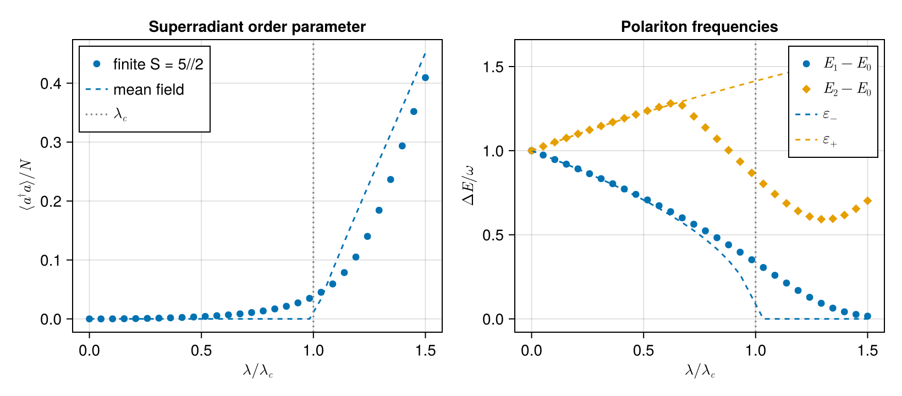

Dicke Model and the Superradiant Transition
The Dicke model describes $N$ two-level atoms collectively coupled to a single cavity mode, retaining the counter-rotating terms that the Tavis-Cummings rotating-wave approximation drops. In the thermodynamic limit $N \to \infty$ it exhibits a quantum phase transition from a normal phase with $\langle a\rangle = 0$ to a superradiant phase with a macroscopically occupied cavity at the critical coupling $\lambda_c = \sqrt{\omega_0\,\omega_a}/2$.
In the collective-spin form,
\[H = \omega_0\, a^\dagger a + \omega_a\, S_z + \frac{2\lambda}{\sqrt{N}}\,(a + a^\dagger)\,S_x, \qquad N = 2S,\]
the $2/\sqrt{N}$ normalisation keeps $\lambda_c$ finite as $N\to\infty$. This example walks through every step that turns the operator Hamiltonian into the textbook result: built-in SU(2) algebra, Heisenberg equations of motion, Holstein-Primakoff bosonisation in the normal phase, the resulting polariton spectrum from a symbolic Bogoliubov-de-Gennes determinant, the critical coupling from gap closing, and a numerical comparison at finite $S$.
Setup
We bundle the rescaled coupling $g \equiv 2\lambda/\sqrt{N}$ into a single symbolic variable so the algebra stays uncluttered:
using SecondQuantizedAlgebra
hc = FockSpace(:cavity)
hs = SpinSpace(:S)
h = hc ⊗ hs
@qnumbers a::Destroy(h, 1)
Sx = Spin(h, :S, 1)
Sy = Spin(h, :S, 2)
Sz = Spin(h, :S, 3)
@variables ω₀ ωₐ g
H = ω₀ * a' * a + ωₐ * Sz + g * (a + a') * Sx\[\mathtt{\omega_a} {S}_{{z}} + g a{S}_{{x}} + \mathtt{\omega_0} a^{\dagger}a + g a^{\dagger}{S}_{{x}}\]
Built-in angular-momentum algebra
Every product is eagerly canonicalised, so the SU(2) commutators fall out directly from *:
commutator(Sx, Sy)\[\mathit{i} {S}_{{z}}\]
commutator(Sy, Sz)\[\mathit{i} {S}_{{x}}\]
commutator(Sz, Sx)\[\mathit{i} {S}_{{y}}\]
Heisenberg equations of motion
The dynamics follow from $\dot{O} = -i[O, H]$. No manual product rule or commutator table is needed:
-1im * commutator(a, H)\[ - \mathtt{\omega_0} ~ \mathit{i} a - g ~ \mathit{i} {S}_{{x}}\]
-1im * commutator(Sx, H)\[ - \mathtt{\omega_a} {S}_{{y}}\]
-1im * commutator(Sy, H)\[\mathtt{\omega_a} {S}_{{x}} - g a{S}_{{z}} - g a^{\dagger}{S}_{{z}}\]
-1im * commutator(Sz, H)\[g a{S}_{{y}} + g a^{\dagger}{S}_{{y}}\]
Reading these off:
\[\begin{aligned} \dot a &= -i\,\omega_0\, a - i\, g\, S_x, \\ \dot S_x &= -\omega_a\, S_y, \\ \dot S_y &= \omega_a\, S_x - g\,(a + a^\dagger)\, S_z, \\ \dot S_z &= g\,(a + a^\dagger)\, S_y. \end{aligned}\]
Holstein-Primakoff bosonisation in the normal phase
Around the normal-phase fixed point (all atoms in their ground state with $\langle S_z\rangle = -S$, and an empty cavity) we expand the spin in a new bosonic mode $b$ via the Holstein-Primakoff transformation,
\[S_+ \approx \sqrt{2 S}\, b, \quad S_- \approx \sqrt{2 S}\, b^\dagger, \quad S_z = b^\dagger b - S,\]
valid for low excitation $\langle b^\dagger b \rangle \ll 2 S$. Then $S_x = (S_+ + S_-)/2 \approx \sqrt{S/2}\,(b + b^\dagger)$ and inserting $g = 2\lambda/\sqrt{2S}$ into the Dicke Hamiltonian yields the polariton Hamiltonian
\[H_\mathrm{pol} = \omega_0\, a^\dagger a + \omega_a\, b^\dagger b + \lambda\,(a + a^\dagger)(b + b^\dagger),\]
which is quadratic in two bosonic modes, exactly the kind of model the two-mode Bogoliubov example solves. We build it on a fresh two-mode Fock space:
ha2 = FockSpace(:a)
hb2 = FockSpace(:b)
h_pol = ha2 ⊗ hb2
@qnumbers a_pol::Destroy(h_pol, 1)
@qnumbers b_pol::Destroy(h_pol, 2)
@variables λ
H_pol = ω₀ * a_pol' * a_pol + ωₐ * b_pol' * b_pol +
λ * (a_pol + a_pol') * (b_pol + b_pol')\[\lambda a_{\mathrm{pol}}b_{\mathrm{pol}} + \lambda a_{\mathrm{pol}}b_{\mathrm{pol}}^{\dagger} + \mathtt{\omega_0} a_{\mathrm{pol}}^{\dagger}a_{\mathrm{pol}} + \lambda a_{\mathrm{pol}}^{\dagger}b_{\mathrm{pol}} + \lambda a_{\mathrm{pol}}^{\dagger}b_{\mathrm{pol}}^{\dagger} + \mathtt{\omega_a} b_{\mathrm{pol}}^{\dagger}b_{\mathrm{pol}}\]
Polariton spectrum from a Bogoliubov-de-Gennes determinant
The Heisenberg equations for $\mathbf{v} = (a, b, a^\dagger, b^\dagger)^T$ close into a linear system $\dot{\mathbf v} = M\,\mathbf v$. Each row comes from a single symbolic commutator:
-1im * commutator(a_pol, H_pol)\[ - \mathtt{\omega_0} ~ \mathit{i} a_{\mathrm{pol}} - \lambda ~ \mathit{i} b_{\mathrm{pol}} - \lambda ~ \mathit{i} b_{\mathrm{pol}}^{\dagger}\]
-1im * commutator(b_pol, H_pol)\[ - \lambda ~ \mathit{i} a_{\mathrm{pol}} - \lambda ~ \mathit{i} a_{\mathrm{pol}}^{\dagger} - \mathtt{\omega_a} ~ \mathit{i} b_{\mathrm{pol}}\]
Reading off the coefficients,
\[M = i\begin{pmatrix} -\omega_0 & -\lambda & 0 & -\lambda \\ -\lambda & -\omega_a & -\lambda & 0 \\ 0 & \lambda & \omega_0 & \lambda \\ \lambda & 0 & \lambda & \omega_a \end{pmatrix}.\]
The polariton frequencies are the moduli of the eigenvalues of $M$. Their characteristic polynomial is biquadratic and tractable symbolically:
using LinearAlgebra
@variables x
M = [
-1im * ω₀ -1im * λ 0 -1im * λ;
-1im * λ -1im * ωₐ -1im * λ 0;
0 1im * λ 1im * ω₀ 1im * λ;
1im * λ 0 1im * λ 1im * ωₐ
]
simplify(det(M - x * I))\[ \begin{equation} - \left( - \left( x^{2} + \lambda^{2} - \mathtt{\omega_0} ~ \mathtt{\omega_a} \right) ~ \lambda + x^{2} ~ \lambda + \lambda^{3} + \lambda ~ \mathtt{\omega_0} ~ \mathtt{\omega_a} \right) ~ \lambda + \left( x^{2} ~ \left( \mathtt{\omega_0} + \mathtt{\omega_a} \right) - \left( x^{2} + \lambda^{2} - \mathtt{\omega_0} ~ \mathtt{\omega_a} \right) ~ \mathtt{\omega_a} - \lambda^{2} ~ \mathtt{\omega_a} \right) ~ \mathtt{\omega_0} - x ~ \left( - x ~ \left( x^{2} + \lambda^{2} - \mathtt{\omega_0} ~ \mathtt{\omega_a} \right) + \lambda^{2} ~ x - x ~ \left( \mathtt{\omega_0} + \mathtt{\omega_a} \right) ~ \mathtt{\omega_a} \right) + \left( - x ~ \left( x^{2} ~ \left( \mathtt{\omega_0} + \mathtt{\omega_a} \right) - \left( x^{2} + \lambda^{2} - \mathtt{\omega_0} ~ \mathtt{\omega_a} \right) ~ \mathtt{\omega_a} - \lambda^{2} ~ \mathtt{\omega_a} \right) - \left( - x ~ \left( x^{2} + \lambda^{2} - \mathtt{\omega_0} ~ \mathtt{\omega_a} \right) + \lambda^{2} ~ x - x ~ \left( \mathtt{\omega_0} + \mathtt{\omega_a} \right) ~ \mathtt{\omega_a} \right) ~ \mathtt{\omega_0} - \lambda^{2} ~ x ~ \left( \mathtt{\omega_0} + \mathtt{\omega_a} \right) + \left( x ~ \lambda ~ \mathtt{\omega_0} - x ~ \lambda ~ \mathtt{\omega_a} \right) ~ \lambda \right) ~ \mathit{i} \end{equation} \]
So $\det(M - x I) = x^4 + (\omega_a^2 + \omega_0^2)\,x^2 + \omega_a\omega_0\,(\omega_a\omega_0 - 4\lambda^2)$.
Setting $y = -x^2$ (so $x = \pm i\,\varepsilon$ with $\varepsilon = \sqrt{y}$) gives the polariton dispersion
\[\varepsilon_\pm^2 = \tfrac{1}{2}\Bigl[ (\omega_a^2 + \omega_0^2) \mp \sqrt{(\omega_a^2 - \omega_0^2)^2 + 16\,\lambda^2\,\omega_a\,\omega_0} \Bigr].\]
Critical coupling from gap closing
Demanding $\varepsilon_- = 0$ reduces to $(\omega_a^2 + \omega_0^2)^2 = (\omega_a^2 - \omega_0^2)^2 + 16\,\lambda^2\,\omega_a\,\omega_0$, which simplifies to $4\,\omega_a^2\,\omega_0^2 = 16\,\lambda^2\,\omega_a\,\omega_0$ and hence
\[\boxed{\;\lambda_c = \tfrac{1}{2}\sqrt{\omega_a\,\omega_0}\;}\]
For $\lambda > \lambda_c$ the lower polariton frequency becomes imaginary and the normal-phase Holstein-Primakoff vacuum is dynamically unstable. The macroscopic occupation of the cavity that defines the superradiant phase arises precisely to restabilise the spectrum around a shifted fixed point.
Numerical verification
We diagonalise the finite-$S$ Dicke Hamiltonian ($S = 5/2$, $N = 5$ atoms) using numeric_average and substitute, and compare both observables to the analytical predictions: the cavity occupation against the mean-field order parameter, and the gap of the first excited state against the lower polariton frequency $\varepsilon_-$.
using QuantumOpticsBase, CairoMakie
ω₀_val, ωa_val = 1.0, 1.0
λc = sqrt(ω₀_val * ωa_val) / 2
S_val = 5 // 2
N_val = 2 * float(S_val)
g_of_λ(λ_val) = 2 * λ_val / sqrt(N_val)
n_max = 30
b_cav = FockBasis(n_max)
b_spin = SpinBasis(S_val)
b = b_cav ⊗ b_spin
# Closed-form curves
ε_minus(λ_val) = sqrt(
max(
0.0,
0.5 * (
(ωa_val^2 + ω₀_val^2) -
sqrt((ωa_val^2 - ω₀_val^2)^2 + 16 * λ_val^2 * ωa_val * ω₀_val)
),
),
)
ε_plus(λ_val) = sqrt(
0.5 * (
(ωa_val^2 + ω₀_val^2) +
sqrt((ωa_val^2 - ω₀_val^2)^2 + 16 * λ_val^2 * ωa_val * ω₀_val)
),
)
n_mf(λ_val) = λ_val < λc ? 0.0 : (λ_val^2 / ω₀_val^2) * (1 - (λc / λ_val)^4)
λs = range(0.0, 1.5 * λc, length = 30)
n_over_N = Float64[]
gap1 = Float64[]
gap2 = Float64[]
for λ_val in λs
subs = Dict(ω₀ => ω₀_val, ωₐ => ωa_val, g => g_of_λ(λ_val))
H_op = dense(to_numeric(substitute(H, subs), b))
E = eigvals(Hermitian(H_op.data))
ψ0 = Ket(b, eigvecs(Hermitian(H_op.data))[:, 1])
push!(n_over_N, real(numeric_average(a' * a, ψ0)) / N_val)
push!(gap1, E[2] - E[1])
push!(gap2, E[3] - E[1])
end
fig = Figure(size = (820, 360))
ax1 = Axis(
fig[1, 1];
xlabel = L"\lambda / \lambda_c",
ylabel = L"\langle a^\dagger a \rangle / N",
title = "Superradiant order parameter",
)
scatter!(ax1, collect(λs) ./ λc, n_over_N; label = "finite S = $(S_val)", marker = :circle)
lines!(ax1, collect(λs) ./ λc, n_mf.(λs); label = "mean field", linestyle = :dash)
vlines!(ax1, [1.0]; color = :gray, linestyle = :dot, label = L"\lambda_c")
axislegend(ax1; position = :lt)
ax2 = Axis(
fig[1, 2];
xlabel = L"\lambda / \lambda_c",
ylabel = L"\Delta E / \omega",
title = "Polariton frequencies",
)
scatter!(ax2, collect(λs) ./ λc, gap1; label = L"E_1 - E_0", marker = :circle)
scatter!(ax2, collect(λs) ./ λc, gap2; label = L"E_2 - E_0", marker = :diamond)
lines!(ax2, collect(λs) ./ λc, ε_minus.(λs); label = L"\varepsilon_-", linestyle = :dash)
lines!(ax2, collect(λs) ./ λc, ε_plus.(λs); label = L"\varepsilon_+", linestyle = :dash)
vlines!(ax2, [1.0]; color = :gray, linestyle = :dot)
axislegend(ax2; position = :rt)
fig
Both panels tell the same story. The finite-$S$ cavity occupation (left) rounds the order-parameter onset on a scale set by $1/S$ and approaches the mean-field curve quickly thereafter. The right panel overlays the analytical polariton frequencies (dashed) on the numerical excitation gaps (markers): below $\lambda_c$ they coincide exactly, and the Holstein-Primakoff polariton spectrum is the low-lying excitation structure. At $\lambda_c$ the lower branch $\varepsilon_-$ softens to zero, signalling the dynamical instability of the normal-phase vacuum. Above $\lambda_c$ the analytical $\varepsilon_-$ is undefined while $E_1 - E_0$ collapses into the parity-tunnel splitting (vanishing only as $S \to \infty$) and $E_2 - E_0$ reveals the re-opened polariton excitation around the displaced fixed point. The entire story (SU(2) algebra, Heisenberg dynamics, polariton dispersion, and critical coupling) came out of a handful of commutator calls and a single det.
This page was generated using Literate.jl.